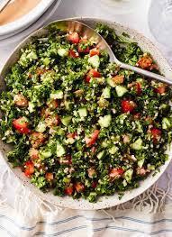

Tabbouleh

Description:
Tabbouleh is a refreshing salad made with vegetable and bulgur.
Ingredients
- 1 cup bulgur wheat
- 1 1/2 cups boiling water
- 3 tablespoons extra-virgin olive oil
- 3 tablespoons freshly squeezed lemon juice
- 2 cups finely chopped fresh parsley
- 1/2 cup finely chopped fresh mint leaves
- 1/2 cup diced cucumber
- 1/2 cup diced tomatoes
-
1/4 cup finely chopped red onion
- Salt, to taste
- Freshly ground black pepper, to taste
- Place the bulgur wheat in a heatproof bowl. Pour the boiling water over the bulgur and cover the bowl with a plate or plastic wrap. Let it sit for about 20 minutes to allow the bulgur to absorb the water and soften.
-
After 20 minutes, remove the cover and fluff the bulgur with a fork.
- In a separate small bowl, whisk together the extra-virgin olive oil and lemon juice to make the dressing.
- In a large mixing bowl, combine the chopped fresh parsley, chopped fresh mint leaves, diced cucumber, diced tomatoes, and finely chopped red onion.
- Add the fluffed bulgur to the bowl with the vegetables.
- Pour the dressing over the bulgur and vegetables. Toss well to combine, ensuring all the ingredients are evenly coated.
- Season the tabbouleh with salt and freshly ground black pepper according to your taste preferences. Adjust the seasoning as needed.
- Let the tabbouleh sit at room temperature for about 30 minutes to allow the flavors to meld together.
- Before serving, give the tabbouleh a final toss to distribute the dressing and flavors evenly.
- Serve the tabbouleh as a refreshing salad or as a side dish alongside grilled meats, falafel, or pita bread.